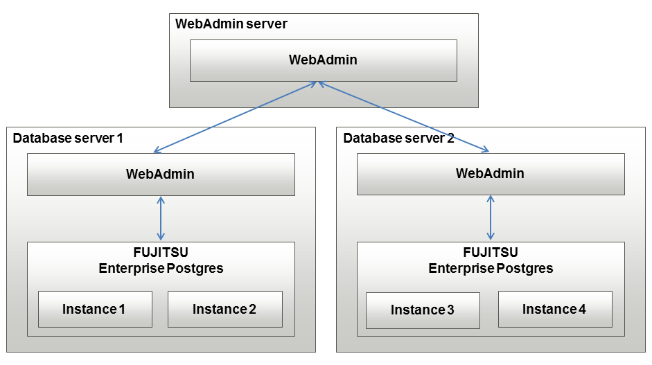
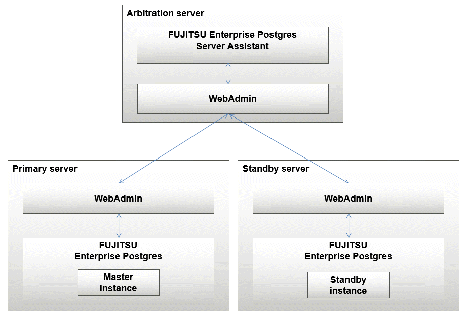

A multiserver configuration enables you to create and operate instances stored on multiple database servers. As shown in the figure below, WebAdmin can be installed on a dedicated WebAdmin server and used to collectively manage the instances stored on the database servers.
Multiserver configuration

Also, when setting up the arbitration server by WebAdmin during database multiplexing mode, install WebAdmin on the arbitration server.
